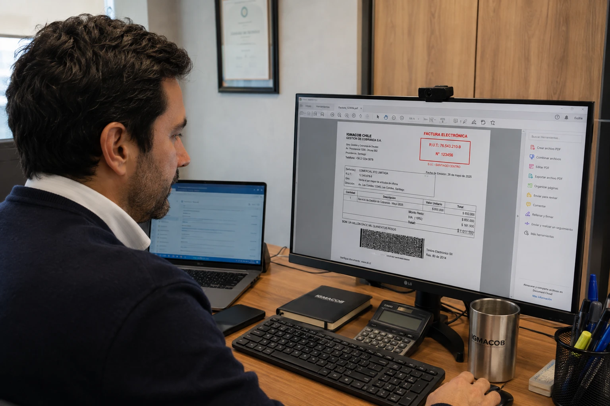

El envío de la factura es el primer paso del cobro. Qué datos, canal y momento usar para no perder tiempo desde el inicio.
Antes de pensar en recordatorios, convenios de pago o cobranza judicial, existe un paso que muchas empresas subestiman: cómo se envía la factura. Una factura enviada al contacto equivocado, sin los datos correctos o fuera de tiempo, arranca el ciclo de cobro con una desventaja que después hay que compensar con más gestión.
En este artículo nos enfocamos específicamente en ese primer paso: qué hacer al emitir y enviar una factura para que el pago llegue lo antes posible.
Uno de los errores más comunes es enviar la factura únicamente a la persona con la que se negoció comercialmente, que muchas veces no es quien gestiona los pagos dentro de la empresa cliente. Antes de facturar:
La regla es simple: el mismo día en que se completó el servicio o la entrega. Cada día de atraso en la emisión se traduce directamente en un día adicional en el ciclo de cobro, sin que el cliente tenga responsabilidad alguna en ese atraso.
Si tu empresa emite facturas de forma acumulada (por ejemplo, una vez a la semana), evalúa si ese proceso interno está alargando tu DSO más de lo necesario.
Una factura con errores u omisiones da pie a que el cliente la devuelva o la cuestione, reiniciando el proceso desde cero. Verifica siempre:
Un correo puede caer en spam, ser recibido por la persona equivocada o simplemente pasar desapercibido en una bandeja saturada. Un simple mensaje de confirmación —"¿pudiste recibir la factura N° X enviada ayer?"— dentro de las primeras 48 horas evita que el atraso se deba a un problema puramente administrativo y no a falta de voluntad de pago.
En Chile, la Ley 19.983 establece que si el receptor de una factura electrónica no la reclama dentro del plazo legal, esta se considera aceptada. Esto no solo formaliza la deuda: le da mérito ejecutivo, lo que significa que, en caso de no pago, se puede iniciar directamente un juicio ejecutivo sin trámites adicionales.
Por eso, además de enviar bien la factura, conviene llevar un registro de la fecha de envío y confirmación de recepción: es la evidencia que sustenta ese plazo si el caso llega a requerir cobranza judicial.
Incluye en el mismo correo o documento los medios de pago disponibles: datos bancarios, link de pago u otra alternativa. Cada paso adicional que el cliente deba hacer para encontrar cómo pagarte es una oportunidad más para que el pago se postergue.
Si quieres profundizar en el resto del proceso de cobro después de este primer paso, revisa nuestra guía completa de cómo agilizar el cobro de facturas.
Igmacob Chile, empresa de cobranza en Santiago con cobertura nacional, ayuda a empresas y PYMEs a optimizar todo el ciclo de facturación y cobro, desde la emisión hasta la recuperación efectiva.
Nuestro enfoque incluye:
Si quieres revisar tu proceso de facturación y cobro de principio a fin, conversemos.
Conversar por WhatsAppEl cobro de una factura empieza antes de la primera llamada de recordatorio: empieza en cómo, cuándo y a quién se envía. Cuidar este primer paso —datos correctos, contacto correcto, envío inmediato y confirmación de recepción— evita una parte importante de los atrasos que después se atribuyen erróneamente a la mala voluntad del cliente.
Al área de contabilidad o finanzas, confirmando el contacto y correo exacto antes de emitir la factura.
El mismo día en que se completó el servicio o la entrega.
Descripción clara, monto correcto, condiciones y fecha de pago, y datos tributarios completos de ambas partes.
Porque muchas facturas se pierden o llegan a la persona equivocada, generando atrasos que no se deben a falta de voluntad de pago.
Sí. Si no se reclama dentro del plazo legal, se considera aceptada y adquiere mérito ejecutivo según la Ley 19.983.